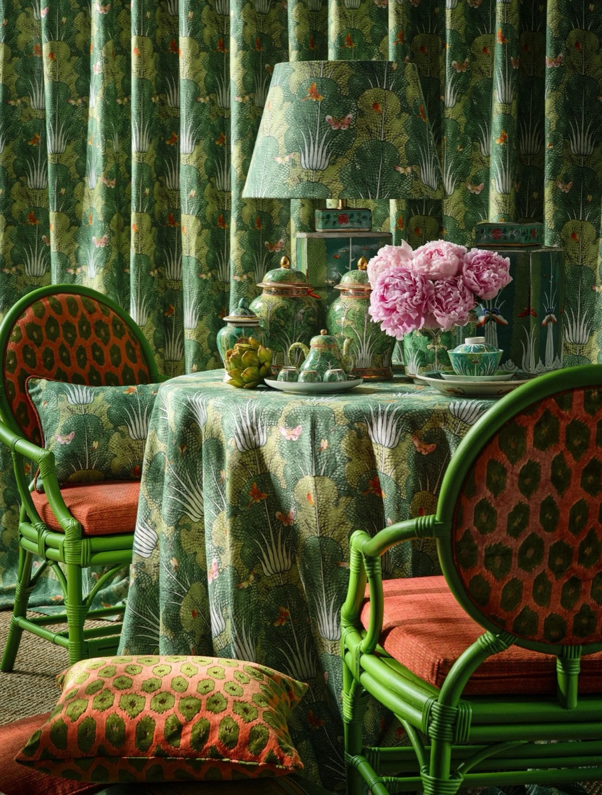
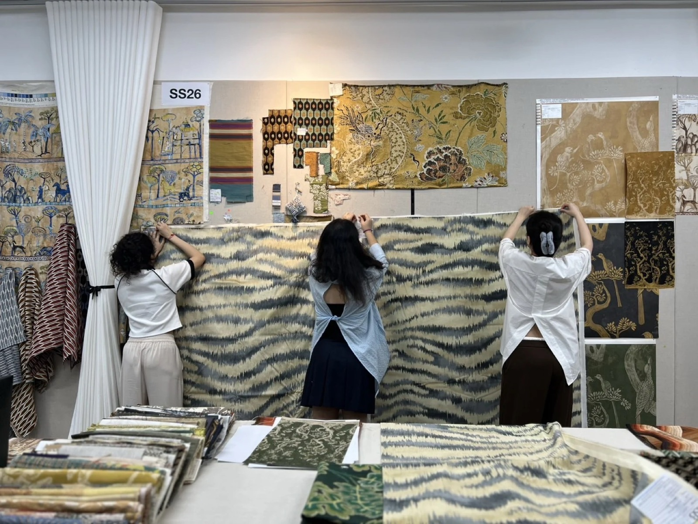
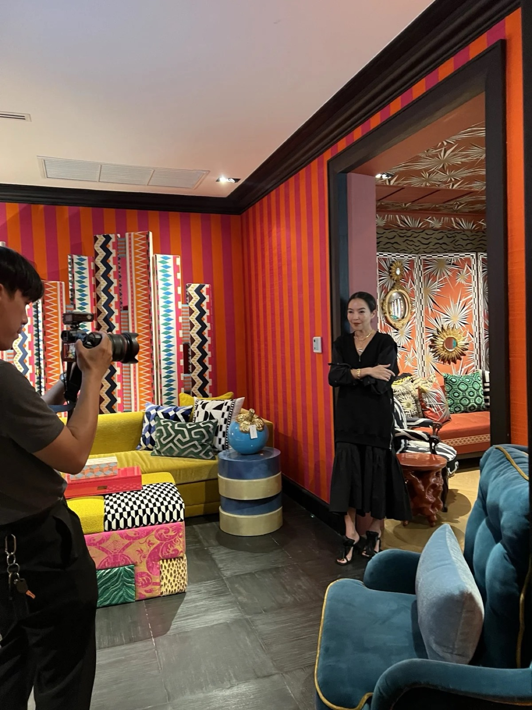
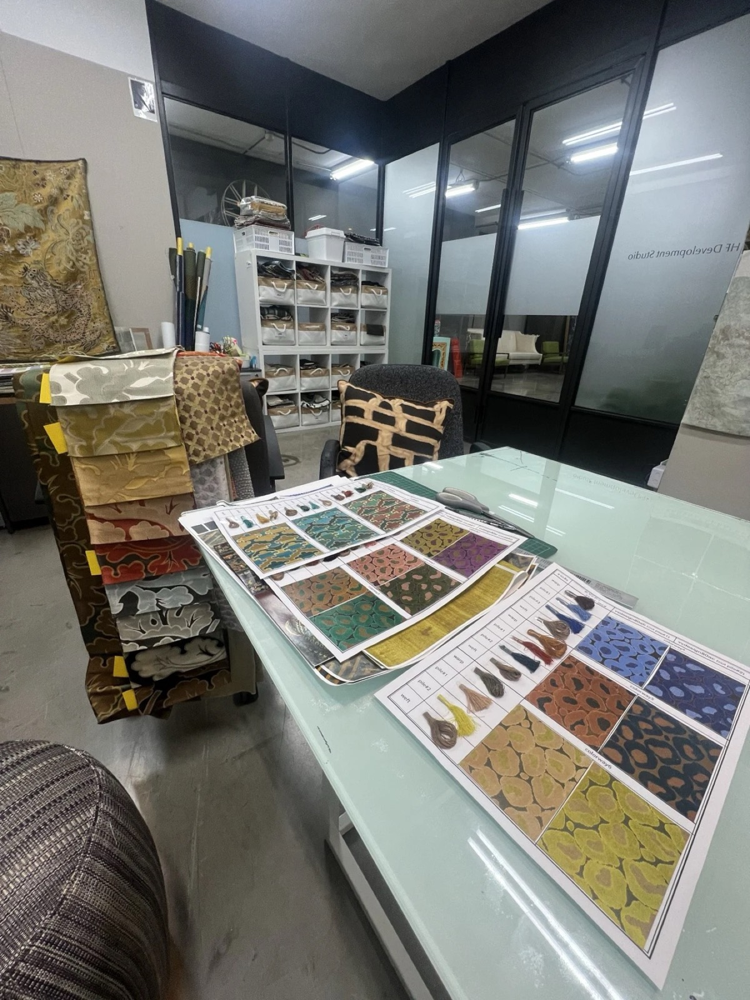
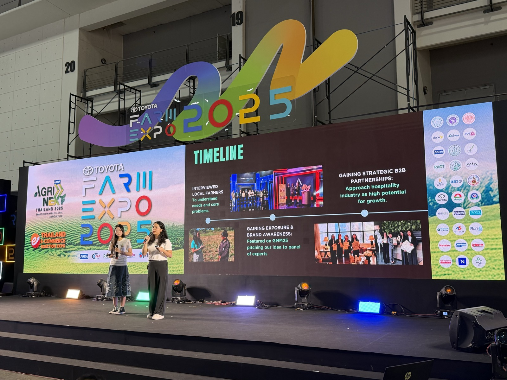

JIM THOMPSON · THE THAI SILK COMPANY · INTERNSHIP
Jim Thompson
140+ colourways. Three selected for the 2026 collection.
My first internship, inside a Thai heritage brand with a global reach. I joined a small, hands-on Home Furnishings team and was trusted with work that contributed to ongoing collections.

Oriental Odyssey II. Collection imagery courtesy of Jim Thompson.
- ROLE
- Textile Development & Home Furnishings Intern
- TIMELINE
- 15 Jul – 15 Aug 2025
- TEAM
- Home Furnishings
- SKILLS
- Colourways · Sample books · Photoshoots · Weaving
02 · WHAT I DID
Trusted with real work
I didn’t expect to be trusted with tasks that went straight into ongoing projects. Most of my five weeks went into colour, but I helped wherever the team needed me.
colourways created; 3 selected by the creative director for the 2026 collection
sample books prepared for France and the UK
photoshoots supported, from Excel shot lists to the set
co-wrote the creative director’s Sustainability Symposium speech
packaging design, archive photography, photographing old JT fashion pieces at the Art Centre, and weaving
Skills I gained
- Colour decisionsKeeping tones and gradients consistent across complex patterns.
- Design for useBalancing versatile basics with bolder palettes for upholstery and wall coverings.
- Material knowledgeWarp and weft, cut and loop, backings, finishes, sampling, and hands-on weaving.
03 · COLOURWAYS
140+ colourways, one pattern at a time
For complex patterns I learned to look closely at the tones in each section and keep the gradients, so the whole pattern still feels cohesive. My favourite part was the non-geometric colourways.
 Selected for 2026
Selected for 2026Clouds
All colourways by me. Final patterns © Jim Thompson.
04 · INSIDE THE STUDIO
Inside the studio
Collections are made two years ahead, and one approval has a ripple effect: without it, suppliers can’t sample, sample books can’t be made, and costing and launch dates slip.



The SS26 wall, a photoshoot, colourway sheets, the SACIT Symposium, and a short clip from the studio. Some imagery courtesy of Jim Thompson.
05 · TAKEAWAYS
What I’m taking with me
“I now find myself thinking about colours and patterns in everyday life.”
- It has to work, not just look nice.Even in a creative role, a design must work for its user, fulfil its purpose and make sense commercially.
- One decision has a ripple effect.Design approval shapes supplier sampling, sample books, costing and launch timing.
- Craft can keep moving forward.SACIT connected the three things I care about most: craft, sustainability and innovation.
If I could add one thing: share Home Furnishings with younger audiences. I didn’t know it existed before, and it deserves to be seen.
06 · THANKS FOR READING :)
More work

EcoPinet Piloted · 2025Packaging made from pineapple waste, with seeds inside.
 BuzzTile Prototype · 2025
BuzzTile Prototype · 2025
A honeycomb floor tile that turns footsteps into energy.